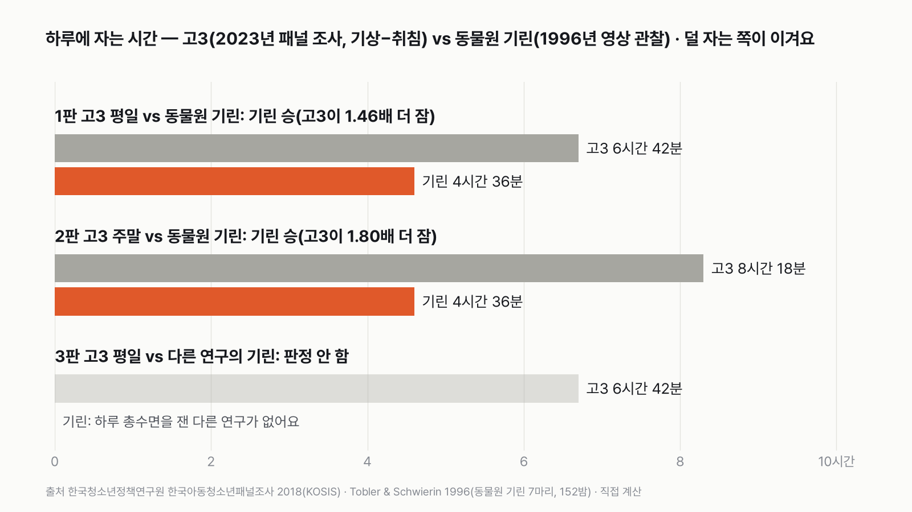
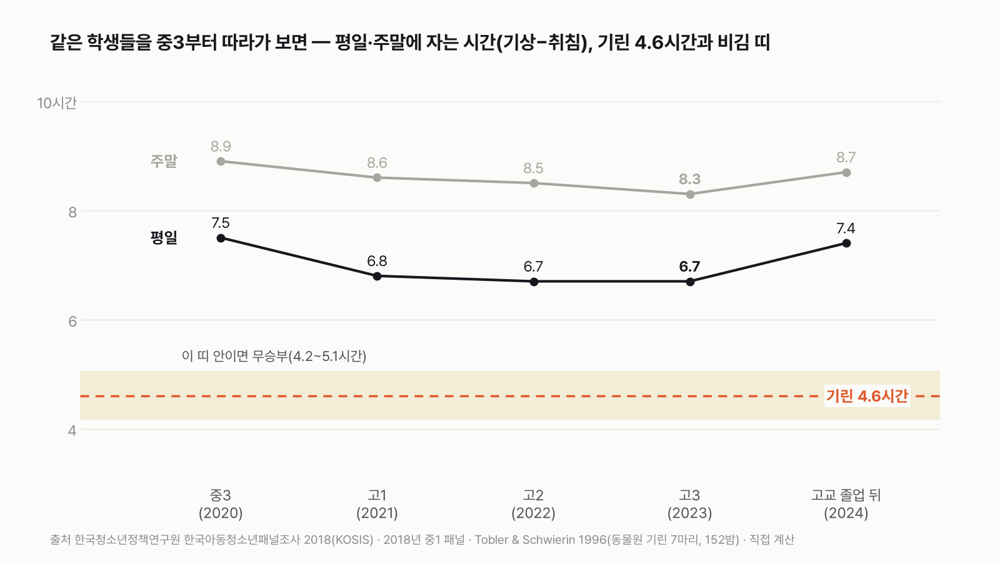
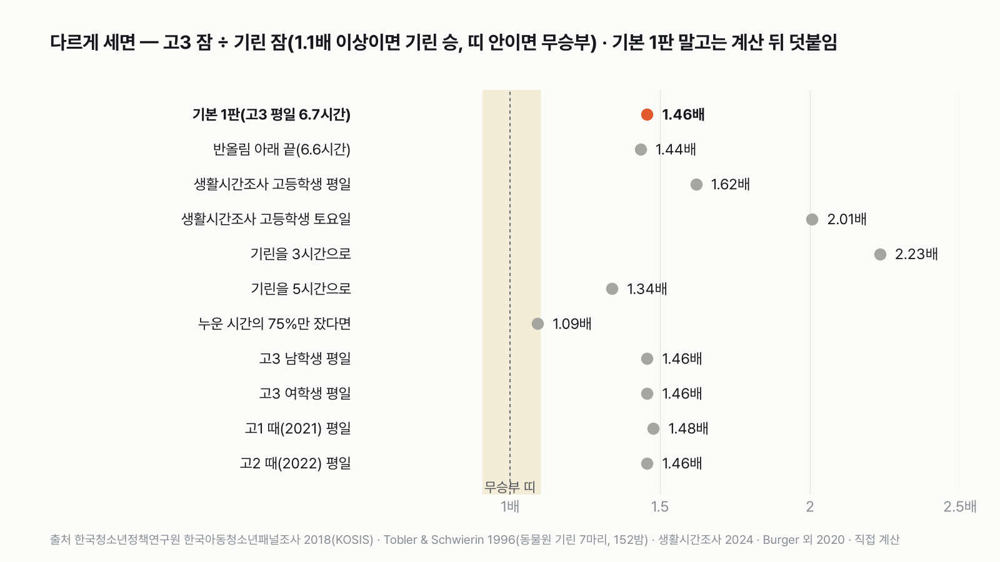

고3 실험맨 vs 기린, 하루에 누가 더 적게 잘까
'고3은 잠을 줄인다'는 말과 '기린은 거의 안 잔다'는 말, 둘 다 들어 봤을 거예요. 둘 중 어느 쪽 잠이 더 짧은지, 나라 조사와 동물원 관찰로 맞대 봐요.
독자 투표
고3 실험맨과 기린, 하루에 누가 더 적게 잘까?
- 고3 실험맨과 기린이 '하루 동안 자는 시간'으로 겨뤄요. 덜 자는 쪽이 이겨요.
- 고3은 평일과 주말에 자는 시간이 크게 달라요. 기린은 한 번에 길게 자지 않고 토막잠을 이어 붙여요.
- 평일 한 판, 주말 한 판, 다른 연구의 기린과 한 판, 모두 세 판이에요.
조건과 규칙
- 고3 실험맨은 한국 고등학교 3학년 평균이에요. 한국청소년정책연구원이 2018년에 중1이던 학생 약 2천 명을 해마다 다시 만나는 「한국아동청소년패널조사」에서, 이 학생들이 고3이 된 2023년 값을 써요. 잠자리에 든 시각(취침)과 일어난 시각(기상)을 학생이 직접 답했어요. 고3을 고른 건 이 조사에서 평일 잠이 가장 짧은 학년(고2와 같아요)이라서예요.
- 기린은 동물원 기린을 152밤 동안 영상으로 찍어, 서서 자는 잠과 누워 자는 잠을 모두 센 연구(Tobler·Schwierin, 1996)의 값이에요.
- 잠은 양쪽 모두 '하루 24시간 동안 잔 시간의 합'으로 견줘요.
- 한쪽이 다른 쪽보다 1.1배 이상 더 자면, 덜 잔 쪽이 이겨요. 1.1배가 안 되면 비긴 거예요.
- 세 판 가운데 더 많이 이긴 쪽이 최종 승자예요.
결과 요약
기린 2승, 3판은 판정 안 함 → 최종 기린 승
- 평일 고3은 밤 0시 12분에 잠자리에 들어 아침 6시 54분에 일어나요. 6시간 42분이에요. 기린은 하루 4시간 36분을 자요. 고3이 1.46배 더 자서 기린이 이겨요.
- 주말 고3은 0시 42분에 잠자리에 들어 아침 9시에 일어나요. 8시간 18분, 기린의 1.80배예요. 기린이 이겨요.
- 다른 연구의 기린은, 찾아본 범위에서 하루 총수면을 숫자로 낸 연구가 없었어요. 야생 기린 연구는 "밤새 따라갈 수 없어 총수면을 정할 수 없었다"고 적었어요. 정해 둔 규칙대로 이 판은 판정하지 않아요.
그래서? 고3이 기린과 비기려면 평일 5시간 3분 아래로 자야 해요. 실제 고3 평균은 그보다 1시간 38분 더 자요.
계산 전에는 평일 판이 박빙일 거라고 짐작했어요. 막상 재 보니 1.46배로 벌어졌어요.
독자 예상 vs 데이터 결과
고3 실험맨과 기린, 하루에 누가 더 적게 잘까?
데이터로 보면 기린. 평일 고3 6시간 42분, 주말 8시간 18분, 동물원 기린 4시간 36분이에요. 평일·주말 모두 고3이 1.1배 넘게 더 자서 기린 2승이에요. 다른 연구의 기린은 하루 총수면을 잰 숫자가 없어 판정하지 않았어요.


1판 평일: 기린 승(1.46배)
평일 고3 실험맨은 0시 12분에 잠자리에 들어 6시 54분에 일어나요. 누워 있는 시간이 6시간 42분이에요. 기린의 하루 4시간 36분보다 2시간 6분 길어요. 고3이 기린보다 1.46배 더 자요. 1.1배 선을 한참 넘어서 기린이 이겨요.
2판 주말: 기린 승(1.80배)
주말에는 잠자리에 드는 시각이 30분 늦어지고, 일어나는 시각은 2시간 6분 늦어져요. 주말 잠은 8시간 18분이에요. 평일보다 1시간 36분 더 자요. 기린과의 차이는 3시간 42분으로 벌어져요.
3판은 판정하지 않았어요
'다른 연구의 기린'은 계산 전에 정한 판이에요. 그런데 찾아본 범위에서, 1996년 연구 뒤에 하루 총수면을 숫자로 낸 기린 연구는 없었어요. 야생 기린 77마리를 밤에 지켜본 2020년 연구는 해 진 뒤 2~5시간만 따라갈 수 있었어요. 그래서 "총수면 시간을 정할 수 없었다"고 썼어요. 동물원 기린 63마리를 본 2021년 연구, 교토 동물원 기린 2마리를 본 2019년 연구도 자세(누움·머리 내림)만 셌어요. 정해 둔 대로, 숫자가 없으면 이 판은 비워 두고 판을 바꾸지 않았어요.
기린의 4시간 36분은 토막잠의 합이에요
기린은 한 번에 오래 자지 않아요. 1996년 연구에서 잠은 저녁 8시부터 아침 7시 사이에 두 덩어리로 몰렸어요. 새벽 2~4시에는 잠이 줄었고, 낮 12~16시에 짧은 낮잠이 몇 번 있었어요. 누워 자는 잠은 대부분 한 번에 11분이 안 됐어요. 서서 조는 잠도 같이 세서 4시간 36분이에요.
꿈꾸는 잠은 13분
기린이 목을 뒤로 꺾어 머리를 엉덩이에 얹는 자세가 있어요. 이때가 꿈을 꾸는 잠(렘수면)이에요. 하루 잠의 4.7%, 약 13분뿐이었어요. 야생 기린 연구에서도 이 자세는 한 번에 평균 2분(121.9초)이었어요. 무리 가운데 몇 마리는 깨어 있고, 한두 마리씩 번갈아 이 자세를 했어요(한꺼번에 많아야 세 마리).
같은 학생을 중3부터 따라가 보면
이 조사는 같은 학생을 해마다 다시 만나요. 그래서 한 무리의 잠이 학년마다 어떻게 바뀌는지 볼 수 있어요. 평일 잠은 중3 때 7시간 30분이었어요(2020년, 코로나19로 원격수업이 많았던 해예요). 고1 때 6시간 48분으로 줄고, 고2·고3 때 6시간 42분이에요. 고등학교를 마친 2024년에는 7시간 24분으로 다시 늘었어요.


줄어든 건 아침이에요
중3(2020년, 원격수업이 많았던 해)에서 고3으로 가는 동안 잠자리에 드는 시각은 23시 48분에서 0시 12분으로 24분 늦어졌어요. 일어나는 시각은 7시 18분에서 6시 54분으로 24분 빨라졌어요. 양쪽에서 24분씩, 모두 48분이 줄었어요. 졸업한 뒤에는 일어나는 시각이 7시 30분으로 다시 늦어졌어요.
고3이 기린을 이기려면
평일 고3이 5시간 3분 이하로 자면 기린과 비겨요. 4시간 10분 이하면 고3이 이겨요. 반대로 기린 쪽에서 보면, 기린이 하루 6시간 5분 넘게 자야 1판이 비기고 7시간 22분 넘게 자야 고3이 이겨요. 지금 고3은 비김 선보다 1시간 38분 더 자요.
'4당5락'과 기린
'4당5락(4시간 자면 붙고 5시간 자면 떨어진다)'이라는 말을 판정 규칙에 넣어 보면, 하루 4시간 자는 고3은 기린보다 덜 자서 이겨요. 5시간 자는 고3은 기린과 1.1배 안쪽이라 비겨요. 기린의 4시간 36분이 딱 4와 5 사이에 있기 때문이에요. 그런데 이 조사의 평균 고3은 4시간도 5시간도 아닌 6시간 42분을 누워 있어요. 이 대결에서 '이긴다'는 덜 잔다는 뜻일 뿐, 그게 좋다는 뜻은 아니에요.
남녀 차이는 거의 없어요
고3 남학생과 여학생 모두 평일 0시 12분에 눕고 6시 54분에 일어났어요. 둘 다 6시간 42분이에요. 주말에는 여학생이 잠자리에 6분 일찍 들고 6분 일찍 일어났어요. 남녀를 나눠도 판정은 같아요.
다른 조사로 재도 마찬가지예요
국가데이터처 생활시간조사(2024)는 하루를 10분 단위로 적는 시간일지로 잠을 재요. 낮잠도 들어가요. 이 조사에서 고등학생(학년 구분 없음)은 평일에 7시간 27분, 토요일에 9시간 14분 잤어요. 패널조사보다 길어서 기린과의 차이는 더 커져요.


기린 쪽을 넓게 잡아도
2020년 야생 기린 논문은 앞선 연구들을 묶어 '사육 기린은 하루 3~5시간 잔다'고 썼어요. 기린을 5시간으로 잡아도 평일 고3이 1.34배 더 자요. 3시간으로 잡으면 2.23배예요. 어느 쪽이든 기린 승이에요.
재는 방법이 달라요
고3 쪽은 '잠자리에 든 시각(취침)~일어난 시각(기상)'을 학생이 답한 값이라, 누워서 깨어 있던 시간도 섞여 있을 수 있어요. 이건 기린 쪽에 유리해요. 반대로 낮잠이 빠진 건 고3 쪽에 유리해요. 기린 쪽은 영상으로 실제 잠든 모습만 셌어요. 누워 있던 시간 가운데 실제로 잔 비율이 75.5% 아래면 1판은 비겨요. 누워 있던 시간의 4분의 3 아래만 실제로 잤다면 비긴다는 뜻이에요. 이 조사로는 그 비율을 알 수 없어서, 판정은 누워 있던 시간 그대로 했어요(계산 뒤 덧붙임).
학교 시간표에 맞춰 사는 고3과, 언제든 일어날 준비를 하며 사는 기린은 잠이 짧은 이유가 전혀 달라요. 그래도 하루 4시간 반으로 버티는 기린보다 고3이 2시간 넘게 더 잔다는 건, 고3의 잠이 아직 기린만큼 줄지는 않았다는 뜻이기도 해요. 오늘 밤 고3의 6시간 42분이 어떤 시간인지 한 번 떠올려 보세요.
이 숫자는 어디서 왔나요
출처
기준일 고3 값은 2023년 조사, 비교용 생활시간조사는 2024년, 기린은 1996년에 발표된 관찰이에요. KOSIS 값은 2026년 11월 10일에 받았어요. 조건은 2026년 11월 10일, 원자료를 받기 전에 정했어요.
한국청소년정책연구원한국아동청소년패널조사 2018
- 수면시간(중학교 1학년 패널)KOSIS DT_402002_2020J001
평일·주말 취침·기상 시각, 2020~2024
국가데이터처생활시간조사
- 학생의 학교급별 평균시간KOSIS DT_1TS202010
고등학생 평일·토요일 수면(비교용)
Tobler I, Schwierin B. J Sleep Res 1996;5:21-32
- Behavioural sleep in the giraffe in a zoological garden
기린 하루 총수면 4.6시간, 잠 모양
Burger AL 외. Ecol Evol 2020;10:2917-2927
- Nightly selection of resting sites and group behavior reveal antipredator strategies in giraffe
야생 기린 밤 행동, '사육 기린 3~5시간'
Burger AL 외. Zoo Biol 2021
- Biological and environmental factors as sources of variation in nocturnal behavior of giraffe
3판 후보(총수면 숫자 없음)
Takagi N 외. Zoo Biol 2019
- Sleep-related behaviors in zoo-housed giraffes
3판 후보(총수면 숫자 없음)
어떻게 셌나요
- 고3 하루 잠: 한국아동청소년패널조사 2018 중1 패널의 2023년(6차) 값이에요. 이 패널은 2018년에 중1이던 학생을 해마다 다시 조사해서 2023년엔 대부분 고3이에요. KOSIS 표는 평일·주말의 평균 잠자리에 든 시각(취침)과 일어난 시각(기상)을 0.1시간 단위로 줘요. 평일·주말 구분(B02 평일, B03 주말)은 표 메타로 확인했어요. 잠 = 기상 시각 + 24 − 취침 시각(평균끼리 뺀 값)이에요.
- 기린 하루 잠: Tobler·Schwierin(1996)이 동물원 기린 8마리(다 큰 5, 덜 자란 2, 새끼 1)를 152밤 연속 영상으로 지켜봤어요. 새끼 1마리를 뺀 7마리의 하루 총수면이 4.6시간이에요. 서서 자는 잠과 누워 자는 잠, 꿈꾸는 잠을 모두 세요.
- 판정: 고3 잠 ÷ 기린 잠이 1.1 이상이면 기린 승, 1 ÷ 1.1(0.909) 이하면 고3 승, 그 사이는 무승부예요.
- 비교용: 생활시간조사 2024 '학생의 학교급별 평균시간'의 고등학생 수면이에요.
| 항목 | 값 | 잰 것 / 가정 |
|---|---|---|
| 고3 평일 취침·기상 시각(2023) | 24.2시 · 6.9시 | 잰 것(설문, 학생 응답, 가중) |
| 고3 주말 취침·기상 시각(2023) | 24.7시 · 9.0시 | 잰 것(설문, 학생 응답, 가중) |
| 응답한 학생 수(2023) | 2,224명 | 잰 것 |
| 기린 하루 총수면 | 4.6시간 | 잰 것(영상 관찰, 7마리, 152밤) |
| 하루 잠 = 기상 시각 − 취침 시각 | 낮잠·누워서 깨어 있던 시간 반영 안 함 | 가정 |
| 2023년 패널 학생 = 고3 | 대부분(유급·중퇴 등 예외 가능) | 가정 |
| 1996년 동물원 기린 = 지금의 기린 | 기린 잠이 그사이 변하지 않았다고 봄 | 가정 |
한계 7가지
이 데이터로 말할 수 없는 것
- 고3 잠은 학생이 답한 취침 시각과 기상 시각의 평균끼리 뺀 값이에요. 실제로 잔 시간과 다르고, 낮잠은 빠졌어요. 누워 있던 시간 가운데 실제로 잔 비율을 알려 주는 출처 있는 값은 찾지 못했어요.
- 시각이 0.1시간(6분) 단위로 나와서 잠 시간에 몇 분의 오차가 있어요. 6시간 36분으로 잡아도 판정은 같아요.
- 처음 정한 자료(질병관리청 청소년건강행태조사)는 학년별 수면 표가 KOSIS에 없어서, 값을 보기 전에 한국아동청소년패널조사로 바꿨어요.
- 패널조사는 같은 학생을 따라가는 조사라 해마다 빠지는 학생이 있어요(2018년 중1 패널, 2023년 응답 2,224명).
- 기린 값은 한 동물원 7마리의 관찰이에요. 동물원은 사자가 없어서 야생보다 더 잘 수도, 좁아서 덜 잘 수도 있어요. 찾아본 범위에서 야생 기린의 하루 총수면을 잰 연구는 없었어요.
- 기린 쪽은 영상으로 본 '행동상 잠'이라 뇌파로 잰 잠과 다를 수 있어요.
- 기린 개체별 범위는 논문 본문을 보지 못해 확인하지 못했어요(초록의 7마리 평균만 썼어요).
다음 대결
대결 다 보기판다 vs 실험맨
판다 vs 실험맨, 다섯 판 승부로 하루에 '더 많이 먹는' 쪽은?
A판다vsB실험맨
투표하러 가기
대결실험맨투표했어요결과: 산다배달·외식비 vs 스마트폰
실험맨이 1년 동안 사 먹는 밥값(배달 포함)으로 최신 스마트폰을 살 수 있을까?
A산다vsB못 산다
투표하러 가기
대결실험맨투표했어요65세 이상 남성 승20대 여성 vs 65세 이상 남성
20대 여성 실험맨 vs 65세 이상 남성 실험맨, 네 판 승부로 하루 운동을 더 많이 하는 쪽은?
A20대 여성vsB65세 이상 남성
투표하러 가기
대결투표했어요짜장면 승짜장면 vs 치킨
짜장면 vs 치킨, 다섯 판 승부로 값이 더 많이 오른 국민 음식은?
A짜장면vsB치킨
투표하러 가기
대결실험맨투표했어요출퇴근 승출퇴근 vs 연차
실험맨이 1년 동안 출퇴근에 쓰는 시간과 연차 휴가로 쉬는 시간, 세 판 승부로 더 긴 쪽은?
A출퇴근vsB연차 휴가
투표하러 가기
대결투표했어요경복궁 승경복궁 vs 에버랜드
경복궁 vs 에버랜드, 다섯 판 승부로 1년에 사람이 더 많이 찾는 곳은?
A경복궁vsB에버랜드
투표하러 가기
대결투표했어요결과: 세계기록 사람마라톤 세계기록 vs 서울 버스
마라톤 세계기록 속도로 뛰는 사람 vs 서울 시내버스, 세 판 승부로 더 빠른 쪽은?
A세계기록 사람vsB서울 버스
투표하러 가기
대결실험맨투표했어요무승부실험맨 vs 수영장
실험맨 혼자 1년 쓴 수돗물로 25m 수영장 레인 한 줄을 채울 수 있을까?
A채운다vsB못 채운다
투표하러 가기
새 글 나오면 받아 보기
피드 리더 앱에 이 사이트 주소를 한 번 넣어 두면, 새 글이 올라올 때 앱에 떠요. 가입이나 메일 주소는 필요 없어요.
받는 법 보기
- 피드 리더 앱을 하나 골라요. 새 글을 모아 보여 주는 앱이에요. 예를 들면 Feedly나 Inoreader가 있어요. 둘 다 무료고 웹·휴대폰에서 써요.
- 앱에서 '구독 추가'(+)를 누르고 아래 주소를 붙여 넣어요.
- 끝이에요. 새 글이 올라오면 앱 목록에 떠요.
https://protofu.github.io/opendata-insight/feed.xmlFeedly를 쓴다면 여기를 눌러 바로 추가할 수도 있어요.